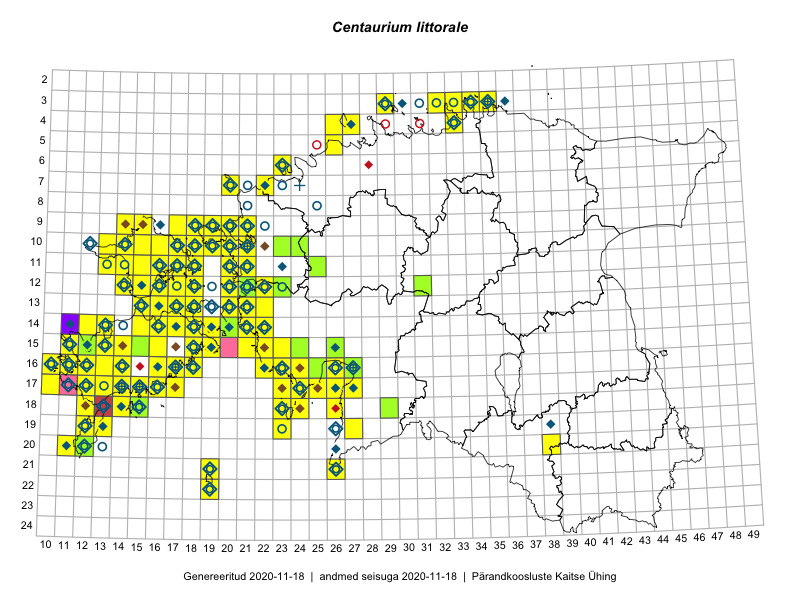

Centaurium littorale
Uuendatud: 2016-12-02
Kaardile koondatud taksonid: Centaurium littorale (Turner) Gilmour

Kaart põhineb 139 vaatlusel. Taksonit on leitud 92 ruudust.
Kuvatud viited 20 esimesele andmebaasikirjele, ülejäänud PlutoFis
- Peedu Saar, Toomas Kukk: 2015-05-27: 09-15: ala
- Toomas Kukk, Peedu Saar: 2015-08-05: 20-11: ala
- Toomas Kukk, Eerik Leibak: 2015-08-12: 10-17: ala
- Toomas Kukk, Eerik Leibak: 2015-08-12: 09-17: ala
- Toomas Kukk, Eerik Leibak: 2015-08-10: 13-15: ala
- Ott Luuk: 2014-07-27: 12-20: GPS punkt
- Ott Luuk: 2014-07-24: 12-20: ala
- Toomas Kukk, Peedu Saar: 2014-07-03: 14-21: ala
- Toomas Kukk, Eerik Leibak: 2015-08-11: 09-15: ala
- Toomas Kukk: 2014-06-18: 18-15: ala
- Toomas Kukk: 2014-06-19: 17-14: ala
- Tiit Hallikma, Toomas Kukk: 2015-08-27: 12-21: ala
- Meeli Mesipuu, Kadri Tali: 2015-07-06: 16-18: ala
- Meeli Mesipuu, Kadri Tali: 2015-07-08: 13-17: ala
- Meeli Mesipuu, Kadri Tali: 2015-07-08: 14-17: ala
- Meeli Mesipuu: 2015-07-11: 14-19: ala
- Meeli Mesipuu: 2015-07-13: 13-20: ala
- Meeli Mesipuu: 2015-07-09: 13-16: ala
- Meeli Mesipuu: 2015-07-15: 16-27: ala
- Toomas Kukk, Ott Luuk, Sander Laherand: 2014-08-24: 14-22: ala